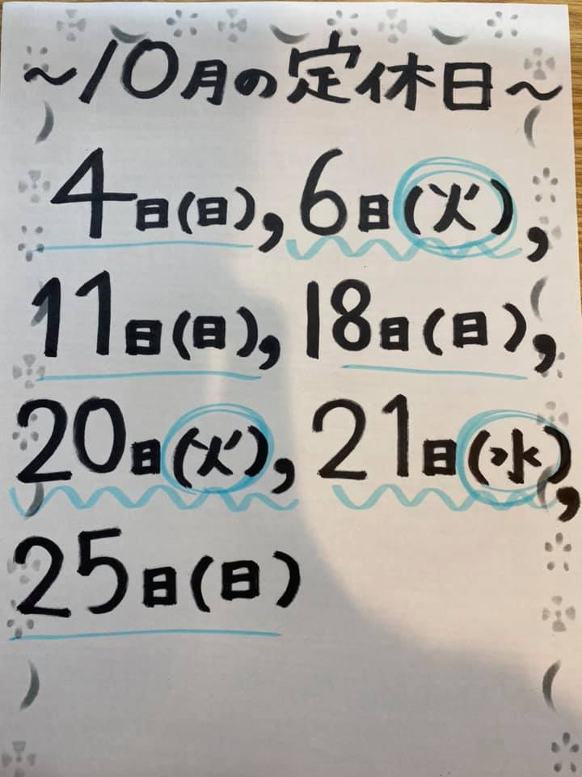
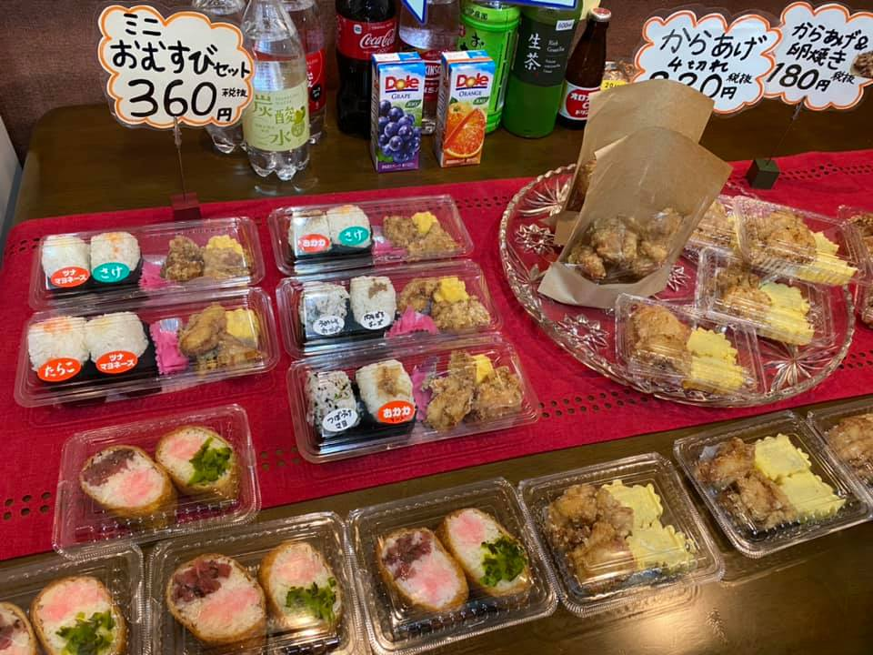
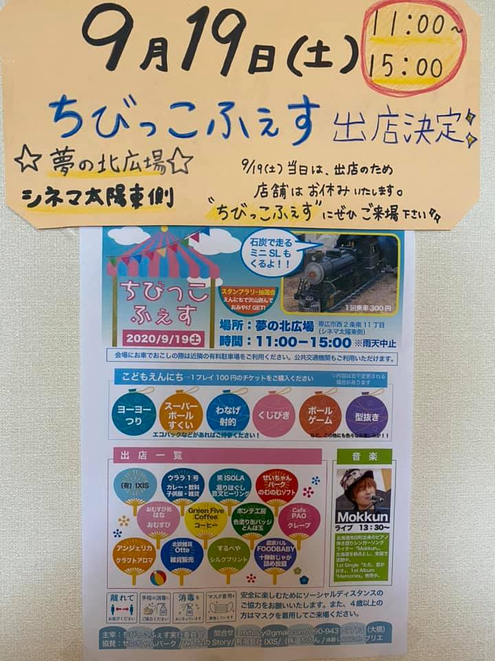
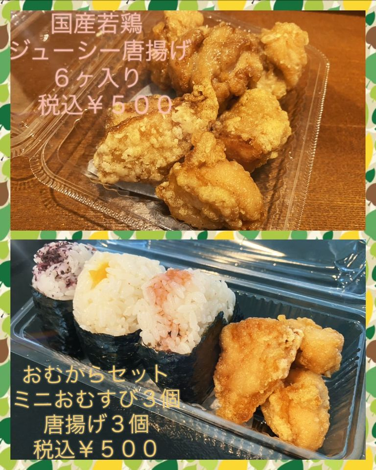

2020年 9月25日 更新
10月の定休日のお知らせ
４日日曜日、６日火曜日、
11日日曜日、18日日曜日、
20日火曜日、21日水曜日、
25日日曜日です。
よろしくお願いいたします。
2020年 9月25日 更新
本日のお惣菜
おばあちゃんの
切り干し大根煮
税抜き130円です。
切り干し大根は、太めで歯応えのある
優しいお味の一品です
豚汁もテイクアウトできます。
税抜き200円です。
2020年 9月25日 更新
こんにちは！！
すっかり秋らしく
なってきましたね。
本日も元気に営業中です。。
2020年 9月19日 更新

ちびっこフェス詳細です
本日はたくさんの皆さまに
ご来場いただきまして、
本当にありがとうございました
天気も良く、子どもたちにも
たくさん喜んでもらえました。
明日から３日間、祭日は定休日になります。
楽しい週末をお過ごし下さい。
2020年 9月9日 更新
ちびっこフェス詳細です
9月19日土曜日
１１時から１５時
夢の北広場（シネマ太陽東側の広場）
ミニSL、縁日、音楽、素敵な食べ物、
飲み物、雑貨やセッション、
大人もこどもも楽しめます
ぜひご来場下さい
2020年 9月9日 更新
ちびっこフェス詳細です
今回のちびっこふぇすでは、
『おむからセット』
（ミニおむすび３つと
唐揚げ３つのセット）と、
『ジューシー唐揚げ』
（国産若鶏使用の唐揚げ６個）
のご提供をさせて頂きます。
真心込めて握った手作りの
おむすび。
老若男女問わず愛
されるソウルフード！！！
ぜひご賞味下さい。
コンセプト
「実家のようなお店」
当店では厳選した素材を使用し
口元で崩れるような絶妙な
にぎり加減にごだわり
「おむすび」をご提供致しております。
どこか懐かしい味
気取らず、くつろげる空間
「実家の様なお店」を
コンセプトに掲げ
皆様のご来店を
心よりお待ちいたしております。
「おむすびのこだわり」
当店ではおむすびの素材を
厳選いたしております。
お米
開業にあたり、何種類ものお米を試し
北海道産「ゆめぴりか」に辿りつきました。
ゆたかな甘味と粘りが
特徴のおにぎりに大変合うお米です。
塩
ミネラルたっぷりの
ヒマラヤ岩塩を使用しております。
海苔
香りが良くパリッとした
有明産の海苔を
使用しています。
「豚汁、お惣菜」
おにぎりに合う豚汁やお惣菜も
各種ご用意しております。
レギュラーメニューとして
から揚げ、卵焼き、豚汁
をご提供しております。
また、季節に合わせて
旬の素材を使用したお惣菜も
ございます。
アクセス
住所
〒080-0018
帯広市西８条南８丁目１７
TEL
090-1640-0087
定休日
毎週 日曜日
臨時の定休日があります。
詳しくは『お知らせ』
のページをご確認くださいませ。
営業時間
AM 11:00~PM14:00